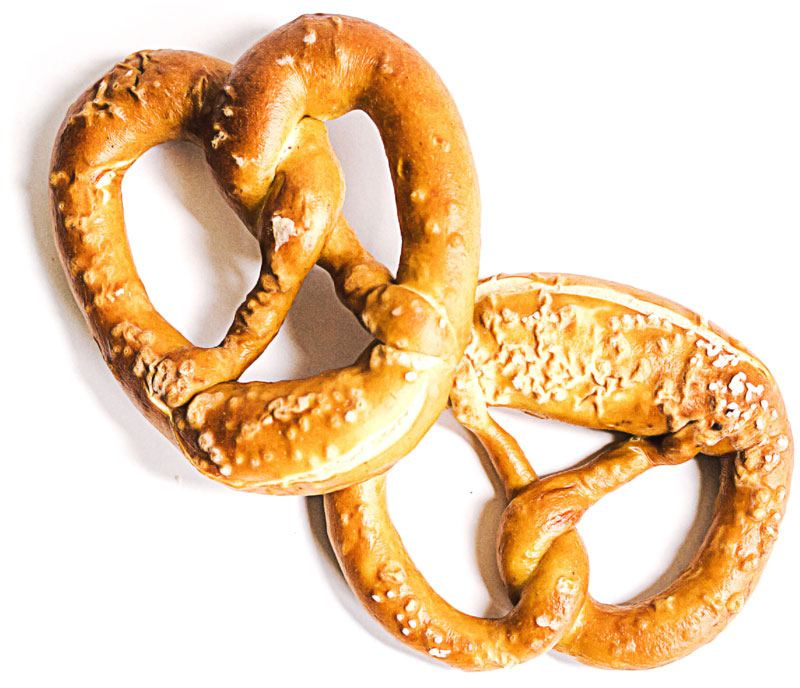
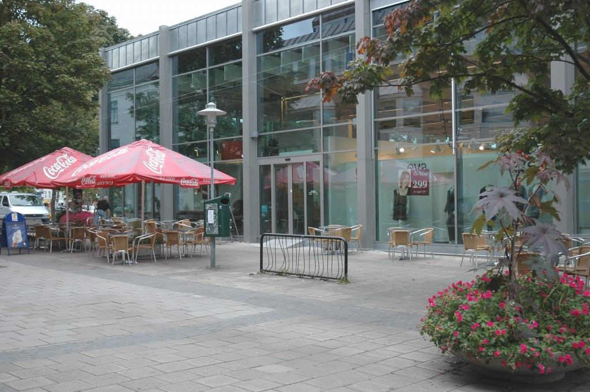

Til kaffen
Til kaffen
I vårt bakeri blir det fortsatt bakt etter gamle håndverksmessige tradisjoner. Bare de beste råvarer blir brukt, med et minimum av bakerhjelpemidler eller tilsetningsstoffer. Dyktige fagfolk sørger for resten.
I flere av brøddeigene brukes det surdeig, noe som gir brødet bedre smak og lengre holdbarhet.
Et meget sunt brød er Ørnbrødet, som er et solid tilskudd til et sunt kosthold med sitt varierte innhold av fint og grovt rugmel, byggmel, havremel og omega-3 I tillegg gir salget av Ørnbrødet penger i kassa til den lokale fotballklubben Ørn.
Åsgårdstrandsbrød, Borrebrød (Borrehaugene) og Kanalloff (Hortenskanalen) er tre av våre lokale brødslag. Disse blir alle stekt i gammeldags steinovn, og resultatet er et meget saftig brød. Lettstekte brød som stekes ferdig i butikken eller hjemme hos kunden har blitt svært populært. I serien vår finnes loff, landbrød, grovkorn, 4-korn og kombikorn.



Kort fortalt: hva trenger du?
Beskriv saken, så svarer vi med hva det krever og hva det koster.